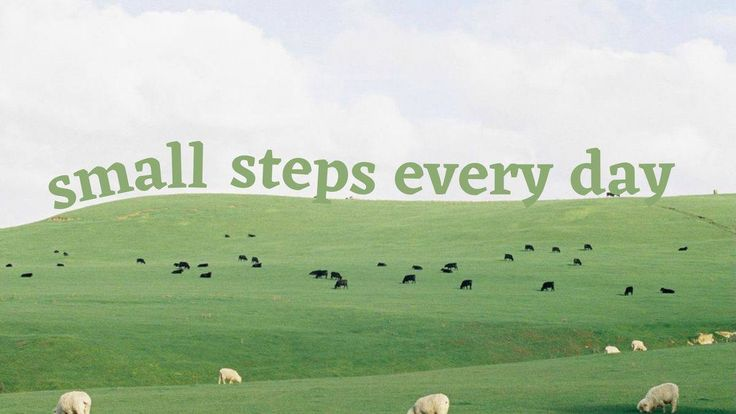

صفحه نخست
پشتیبانی
ورود / ثبت نام

hopeful
creative
minimal
new
aesthetic
colorful
pinterest
useful
easy
لیست رنگ های مینیمال
rgb(129, 191, 218)
rgb(245, 240, 205)
rgb(250, 218, 122)
#B1F0F7
#81BFDA
#8EB486
بازگشت به اول صفحه